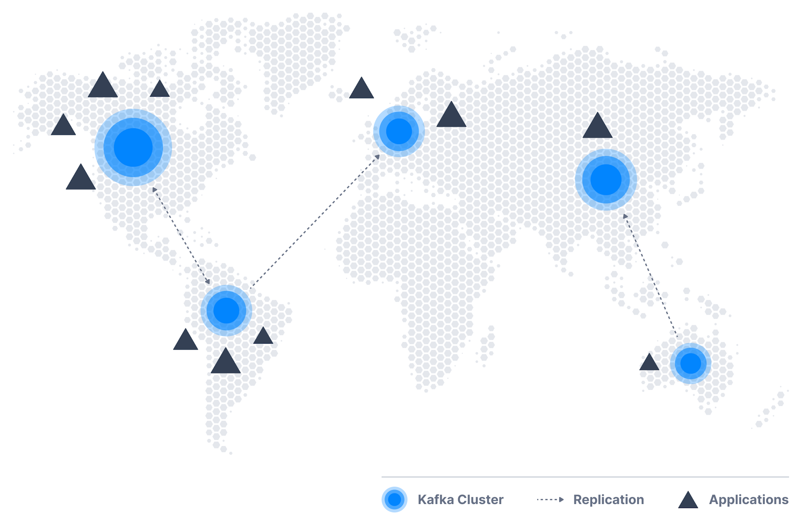
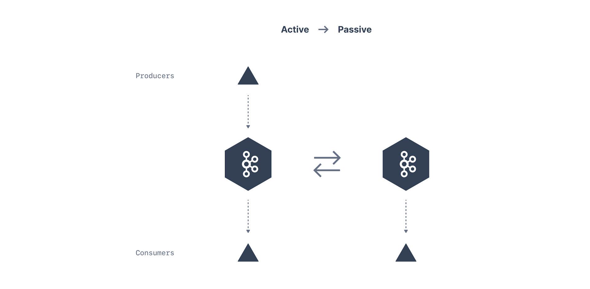

1. Cross Cluster Mirroring

-
某些应用可能需来自多个数据中心的数据，管理员将需在集群间连续复制(copy)数据；
-
mirroring application的核心是消费者和生产者，在镜像过程
(mirroring process)中，它会消费A集群中的数据，并将其发布到B集群； -
执行mirroring的工具：Mirror Maker 2和uReplicator；
2. Active Active Architecture
3. Active Passive Architecture

-
在某些情况下，对多个集群的唯一要求是支持某种灾难场景，
或通过镜像整个集群来实现更快的本地读取； -
也许在同一个数据中心中有两个集群，对所有应用程序使用一个集群，但希望第二个集群
包含(几乎)原始集群中的所有事件，若原始集群完全不可用，则可使用这些事件； -
此架构中，生产者仅将数据发布到活动集群，被动集群不接收任何写入，
它只是通过Mirror Maker从主动集群接收镜像数据；